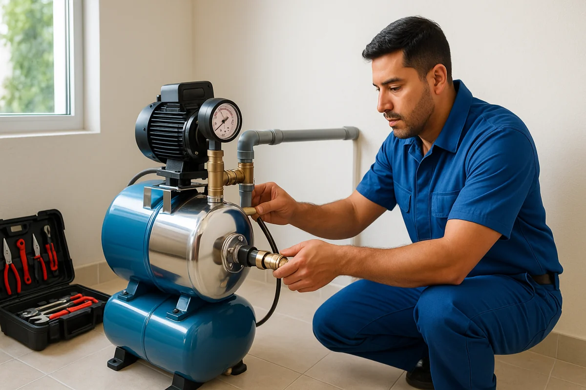

Bomba y Equipo Hidroneumático Profesional

Instalamos y calibramos la bomba o el equipo hidroneumático que tu cisterna necesita

Instalamos cisternas de 1,100, 2,800 y 5,000 litros con bomba, flotador eléctrico o equipo hidroneumático. Que los cortes de JAPAC no te agarren con los tinacos vacíos. Garantía de 6 meses.
WhatsApp: 52 667 392 2273 · Llamadas: 667 392 2273
Cotización gratis por WhatsAppCada temporada de calor, JAPAC anuncia cortes y baja presión en colonias completas. En zonas como Lomas de Rodriguera, Villa Universidad o La Conquista, el agua llega tan débil que el tinaco no alcanza a llenarse. Una cisterna guarda reserva para varios días y, con bomba o equipo hidroneumático, tu casa no se queda sin agua aunque la red esté seca.
Agua almacenada para 2-3 días aunque JAPAC suspenda el servicio en tu colonia
Con equipo hidroneumático, regaderas con presión tipo hotel en toda la casa
El flotador eléctrico enciende y apaga la bomba solo, sin estar al pendiente
Instalación con garantía por escrito en conexiones, bomba y flotador
Para parejas, departamentos o casas chicas. Cubre 1-2 días de corte, cabe en patios reducidos y es la opción más económica.
La más vendida en Culiacán. Para familias de 4-5 personas: aguanta 2-3 días sin servicio combinada con tinaco y bomba.
Para familias grandes, casas con jardín y negocios que no pueden parar: estéticas, consultorios, fondas y oficinas.
Trabajamos con cisterna Rotoplas y otras marcas. Si ya compraste la tuya, también la instalamos.
Trabaja por gravedad y funciona bien si en tu colonia la presión es buena y los cortes son raros. Es más barato y rápido de instalar: revisa nuestra instalación de tinaco en Culiacán.
Conviene cuando hay cortes frecuentes o la presión de JAPAC no sube el agua al tinaco. Almacena mucho más y se llena incluso con un hilo de agua durante la madrugada.
La combinación más común es cisterna + bomba + tinaco. Si tu único problema es que el agua llega débil a regaderas y llaves, quizá te resuelve antes una corrección de baja presión de agua.
Para cisterna enterrada o semienterrada, la excavación se cotiza como servicio opcional según tamaño y tipo de suelo. Muchos clientes eligen cisterna superficial y se ahorran ese costo.
Pedir asesoría gratis
Instalamos y calibramos la bomba o el equipo hidroneumático que tu cisterna necesita
El costo depende de la capacidad, el equipo y si el proyecto lleva excavación. Son precios orientativos; antes de iniciar confirmamos el precio final sin sorpresas.
Desde $3,500 MXN
Conexiones, bomba con flotador eléctrico y prueba de funcionamiento. La cisterna se cotiza aparte.
Desde $4,500 MXN
Presión directa y constante en regaderas y llaves de toda la casa, sin depender del tinaco.
Cotización aparte
Para cisterna enterrada o semienterrada. Se cotiza según capacidad y tipo de suelo.
Según capacidad
1,100 L, 2,800 L o 5,000 L. Te conseguimos el mejor precio o instalamos la que ya compraste.
Mándanos fotos del espacio por WhatsApp y recibe tu cotización exacta gratis el mismo día. Revisa también los precios de plomería en Culiacán y todos nuestros servicios de plomería.
Cotizar por WhatsAppRevisamos el espacio y te recomendamos capacidad y equipo. Cotización exacta gratis y sin compromiso.
Nivelamos la base. Si el proyecto lleva excavación opcional, la realizamos antes de colocar el tanque.
Conectamos entrada de la red, salida a la casa, bomba y flotador eléctrico o equipo hidroneumático.
Probamos llenado automático, presión y que no haya fugas. Te entregamos tu garantía por escrito.
Toda instalación incluye 6 meses de garantía sobre nuestro trabajo: conexiones, sellado, bomba y flotador eléctrico. Si algo falla por la instalación, regresamos y lo corregimos sin costo.
La instalación cuesta desde $3,500 MXN con conexiones, bomba con flotador eléctrico y prueba. El equipo hidroneumático cuesta desde $4,500 MXN adicionales. La cisterna se cotiza aparte; la cotización exacta es gratis por WhatsApp.
1,100 L para parejas o departamentos, 2,800 L para familias de 4-5 personas (la más vendida) y 5,000 L para familias grandes o negocios.
No, la excavación es un servicio opcional cotizado aparte según tamaño y tipo de suelo. Muchas casas optan por cisterna superficial, que reduce bastante el costo total.
La bomba con flotador eléctrico sube el agua al tinaco automáticamente y es más económica. El equipo hidroneumático da presión directa y constante sin tinaco; ideal para casas de dos pisos o regaderas débiles.
Una cisterna superficial con bomba y flotador queda lista en 1 día. Si el proyecto incluye excavación para cisterna enterrada, el trabajo completo toma 2-3 días.
Damos 6 meses de garantía por escrito en conexiones, sellado, bomba y flotador. Si algo falla por la instalación, regresamos sin costo. La cisterna y la bomba conservan la garantía del fabricante.
Atendemos toda la ciudad, con especial demanda donde más pega la falta de agua en temporada de calor: Tres Ríos, Las Quintas, Chapultepec, Stanza Toscana, La Campiña, Villa Universidad, Lomas de Rodriguera, Centro, Tierra Blanca, Infonavit Barrancos, Humaya, La Conquista, Valle Alto y fraccionamientos nuevos. Cubrimos todo Culiacán.
Cotización exacta gratis por WhatsApp. Instalamos tu cisterna con bomba y garantía de 6 meses en Culiacán.
Somos plomeros profesionales en Culiacán con más de 15 años instalando cisternas, tinacos, bombas y equipos hidroneumáticos. Dimensionamos cada proyecto para que tu casa tenga reserva y presión todo el año.
Mándanos fotos del espacio y te decimos qué capacidad te conviene, si necesitas bomba o hidroneumático, y el precio exacto. Gratis y sin compromiso.
Enviar mensaje por WhatsApp